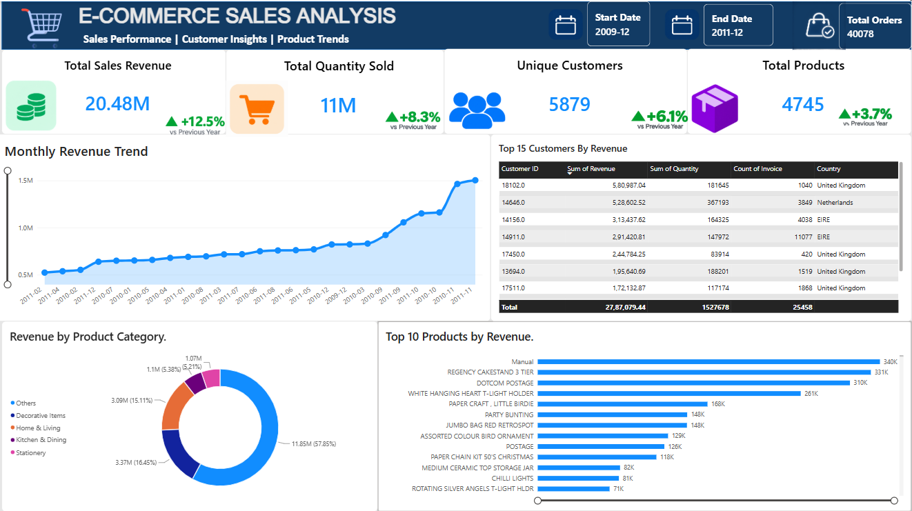
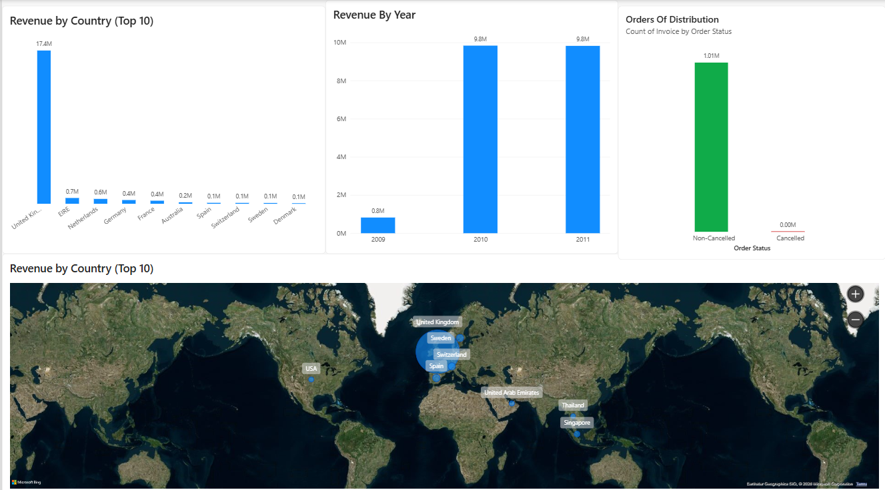

Data Analytics Project | Python | SQL | MySQL | Power BI
An end-to-end data analytics project focused on analyzing e-commerce transactions, identifying sales trends, evaluating product performance and understanding customer purchasing patterns.
Python, Pandas, NumPy, MySQL, SQL, Power BI, Excel, Matplotlib and Seaborn.

